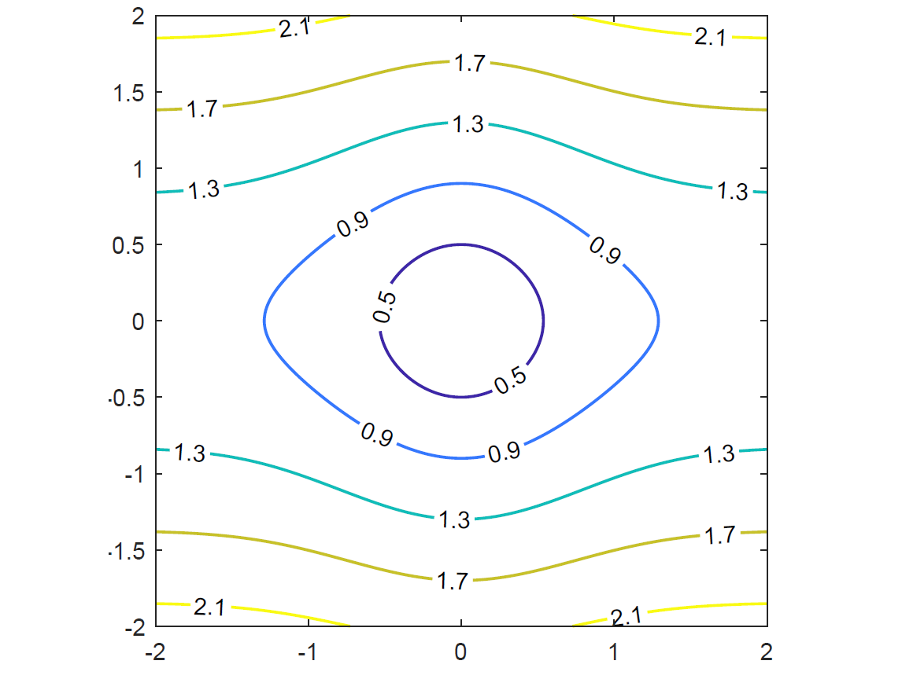
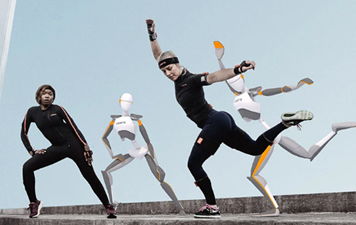
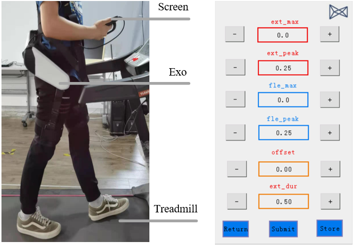
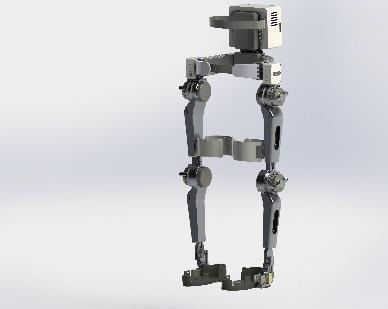

|
Research
Research Interests
- Orientation Estimation of IMUs
Research Experience
1. Robust State Estimation
|
 |
The well-known mean squared error (MSE) based algorithms are sensitive to outliers or non-Gaussian noise.
To handle this issue, we propose a novel metric which is called multi-kernel correntropy and derive some robust estimators. Relevant works:
- Multi-kernel Maximum Correntropy Kalman Filter
- Generalized Multi-kernel Maximum Correntropy Kalman Filter for Disturbance Estimation
|
2. Orientation Estimation of IMUs
|
 |
Inertial measurement units are widely used in the field of gait assessment, human-robot interaction, motion animation,
and virtual and augmented reality. However, their performances are greatly affected by external acceleration and magnetic disturbance. To cope with this issue, we employ
the multi-kernel correntropy to replace the mean squared error (MSE) based cost function, and derive some robust orientation estimation estimators for IMUs. Relevant works:
- Compact Maximum Correntropy-Based Error State Kalman Filter for Exoskeleton Orientation Estimation
- Multi-kernel Maximum Correntropy Kalman Filter for Orientation Estimation
|
3. Preference-based control for light-weight exoskeletons
|
 |
To provide the individualized assistance profile for walking in a community, we provide
a preference-based learning scheme for walking assistance in a community. Relevant work:
- Preference-based Assistance Map Learning with Robust Adaptive Oscillators
|
4. Strength augmentation using exoskeletons
|
 |
We propose a mixed-control scheme for strength augmentation using exoskeletons. The exoskeleton can carry
a heavy load and follow the user's different walking modes, e.g., level walking, stair ascend, and stair descent. Relevant work:
- Gait Planning And Control Method Of Lower Extremity Exoskeletal Robot
|
|